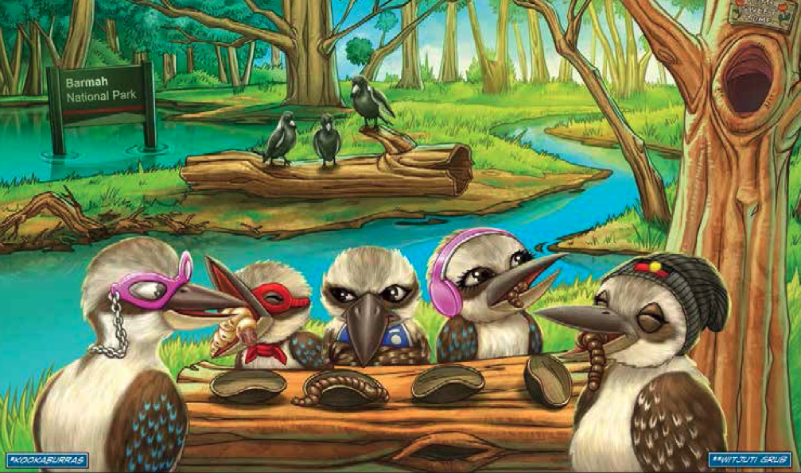

Welcome
Welcome to the Positive Partnerships online learning space. Here you'll find self-paced modules, interactive activities, and resources tailored to your role — whether you're an educator or a parent or carer.
Select your pathway below to begin your learning journey.
Choose Your Pathway
Professional Learning
For educators — build your knowledge and skills to support autistic students in your school
Parents & Carers
For families — understand your child's needs and learn strategies for home, school, and community
Professional Learning
This pathway is designed for educators working directly with autistic students. Work through the modules, activities, and resources below at your own pace.
Introduction to Autism
This comprehensive module explores what autism is, how it presents in school-aged students, and the key principles for creating inclusive educational environments. Covers communication, sensory processing, executive functioning, and strengths-based approaches.
Take a moment to consider what you already know about autism in education, and what you'd like to learn more about.
I feel confident in my understanding of…
0 selectedClick on the highlighted areas in this classroom to learn how the physical environment can impact autistic students. Consider what adjustments you could make in your own classroom.
Reflect: As you watch, think about how executive functioning challenges might show up in your classroom. What strategies could you try?

Djarmbi the Kookaburra
This storybook supports young people to explore, understand and celebrate family, culture and difference in the world. Building awareness of autism and an importance of inclusivity within the home, school and broader community.
Diversity Wheel & Planning Tool
Use this template to map your student's unique profile and plan targeted support strategies. Complete this before your workshop to bring along for discussion.
Open Planning Tool →Parents & Carers
This pathway is designed for parents and carers of autistic young people. Explore modules, interactive environments, and resources to deepen your understanding and build strategies for home, school, and community.
Introduction to Autism
This comprehensive module explores what autism is, how it presents in young people, and how you can best support your child at home, at school, and in the community. Covers communication, sensory processing, executive functioning, and strengths-based approaches.
Take a moment to consider what you already know about how autism affects your child, and what you'd like to learn more about.
I feel confident in my understanding of…
0 selectedYour child navigates many different environments each day. Click the highlighted areas in each scene to understand how these spaces can affect autistic young people — and what adjustments can help.
Understanding Sensory Processing
Sensory Processing Strategies
Reflect: Think about your child's sensory preferences. What sensory input do they seek out? What do they try to avoid? How might this understanding change the way you approach daily routines?
Djarmbi the Kookaburra
This storybook supports young people to explore, understand and celebrate family, culture and difference in the world. Building awareness of autism and an importance of inclusivity within the home, school and broader community.
Diversity Wheel & Planning Tool
Use this template to map your child's unique profile — their strengths, interests, sensory needs, and support strategies. A great tool for sharing with your child's school.
Open Planning Tool →